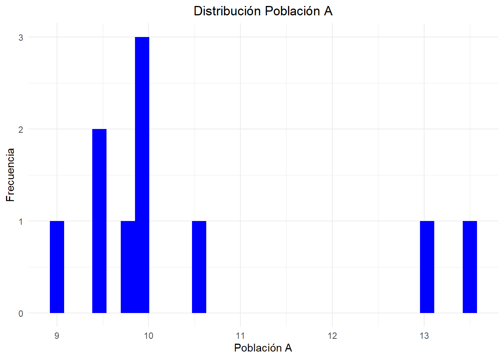

Taller 04 - Pruebas estadísticas paramétricas y no paramétricas
Autor/a
Integrante 1
Fecha de publicación
18 de febrero de 2025
En este taller les planteamos preguntas científicas con su respectivo diseño experimental y toma de datos. Su tarea es realizar la prueba estadística (paramétrica o no paramétrica) adecuada en cada caso para para analizar los datos y llegar a la conclusión estadística adecuada. Todos los datos se encuentran en el archivo datos-04.xlsx
En todos los puntos del taller debe realizar todos los siguientes pasos:
Explorar visualmente el conjunto de datos asociado a la investigación.
Plantear la hipótesis nula y la alternativa teniendo en cuenta la pregunta de investigación mencionada.
Defina el nivel de significancia (\(\alpha\)) y justificar su criterio.
Aplicar la prueba estadística.
Discutir sus resultados.
1. Apareamiento de peces [1.25 puntos].
Los machos de algunas especies de peces cíclidos son fértiles hasta unos pocos días después de que ellos se han vuelto socialmente dominantes en presencia de hembras. Machos sin un territorio (y por lo tanto sin esperanza de apareamiento) tienen genitalia atrofiada, mientras que machos con control de territorio y con hembras, tienen genitalia bien desarrollada. Ellos pueden cambiar de un estado a otro en cuestión de días. White et al., 2002 quisieron conocer la señal hormonal para este cambio, y una hormona candidata es la gonadotropina (GnRH). Ellos midieron el ARN mensajero (mRNA) de GnRH para cinco peces territoriales (T) y para seis peces no territoriales (NT).
Asuma que el muestreo fue aleatorio e independiente. ¿Existe diferencia en el promedio de los niveles de mRNA de GnRH para machos con y sin territorio?
library(readxl)library(ggplot2)library(dplyr)
Adjuntando el paquete: 'dplyr'
The following objects are masked from 'package:stats':
filter, lag
The following objects are masked from 'package:base':
intersect, setdiff, setequal, union
#Se utiliza un nivel de significancia de 0.01datos <-read_xlsx("datos-04.xlsx")pruebaNorm_T <-shapiro.test(datos[7:11,]$`Nivel de mRNA de GnRH`)pruebaNorm_NT <-shapiro.test(datos[1:6,]$`Nivel de mRNA de GnRH`)pruebaNorm_T
Shapiro-Wilk normality test
data: datos[7:11, ]$`Nivel de mRNA de GnRH`
W = 0.87774, p-value = 0.2992
pruebaNorm_NT
Shapiro-Wilk normality test
data: datos[1:6, ]$`Nivel de mRNA de GnRH`
W = 0.86864, p-value = 0.2208
#De acuerdo con los valores-P del grupo T y NT no se rechaza la hipótesis de que ambos se distribuyen normal,según el nivel de significancia escogido.pruebaVar <-var.test(datos[7:11,]$`Nivel de mRNA de GnRH`,datos[1:6,]$`Nivel de mRNA de GnRH`)pruebaVar
F test to compare two variances
data: datos[7:11, ]$`Nivel de mRNA de GnRH` and datos[1:6, ]$`Nivel de mRNA de GnRH`
F = 9.6258, num df = 4, denom df = 5, p-value = 0.02878
alternative hypothesis: true ratio of variances is not equal to 1
95 percent confidence interval:
1.302917 90.140561
sample estimates:
ratio of variances
9.625804
#De acuerdo con los valores-P del grupo T y NT no se rechaza la hipótesis de que ambos comparten la misma varianza, según el nivel de significancia escogido.test <-t.test(datos$`Nivel de mRNA de GnRH`~datos$`Estatus territorial`,var.equal=TRUE,alternative ="two.sided")test
Two Sample t-test
data: datos$`Nivel de mRNA de GnRH` by datos$`Estatus territorial`
t = -2.4114, df = 9, p-value = 0.03916
alternative hypothesis: true difference in means between group NT and group T is not equal to 0
95 percent confidence interval:
-2.01099228 -0.06420772
sample estimates:
mean in group NT mean in group T
0.7480 1.7856
#De acuerdo con el valor-P del test no se rechaza la hipótesis de que ambas medias son iguales, según el nivel de significancia.
2. Temperatura en avestruces [1.25 puntos].
Las avestruces viven en ambientes cálidos y normalmente están expuestas al sol por largos periodos de tiempo. Los mamíferos en ambientes similares tienen mecanismos especiales para reducir la temperatura del cerebro en relación a la temperatura del cuerpo. Se quiere saber sí las avestruces pueden hacer lo mismo (Fuller et al., 2003). La temperatura media del cuerpo y del cerebro de seis avestruces fue registrado en condiciones típicas de calor.
Asuma que el muestreo fue aleatorio e independiente. Determine si existe alguna diferencia entre la temperatura corporal y la temperatura del cerebro en las avestruces (grafique los resultados).
library(tidyr)datos_a <-read_xlsx("datos-04.xlsx",sheet =2)dat <-pivot_longer(datos_a, cols=c("Temperatura corporal", "Temperatura cerebro"), names_to="Tipo",values_to ="Temperatura")graf<-ggplot(dat, aes(x=Tipo,y=Temperatura,fill=Tipo))+geom_boxplot(color="black")+labs(title="Gráfico BoxPlot de la distribución de Temperatura Corporal y Cerebral en Avestruces")+theme(legend.title =element_text (hjust=0.5 ))+geom_jitter()graf
Shapiro-Wilk normality test
data: datos_a$`Temperatura cerebro`
W = 0.92054, p-value = 0.5092
pruebaNorm_TCORP
Shapiro-Wilk normality test
data: datos_a$`Temperatura corporal`
W = 0.92434, p-value = 0.5371
#De acuerdo con los valores-P del grupo TCORP y TCER no se rechaza la hipótesis de que ambos se distribuyen normal,según el nivel de significancia escogido.pruebaVar_T <-var.test(datos_a$`Temperatura corporal`,datos_a$`Temperatura cerebro`)pruebaVar_T
F test to compare two variances
data: datos_a$`Temperatura corporal` and datos_a$`Temperatura cerebro`
F = 0.51783, num df = 5, denom df = 5, p-value = 0.4875
alternative hypothesis: true ratio of variances is not equal to 1
95 percent confidence interval:
0.0724599 3.7005829
sample estimates:
ratio of variances
0.5178261
#De acuerdo con los valores-P del grupo TCORP y TCER no se rechaza la hipótesis de que ambos comparten la misma varianza, según el nivel de significancia escogido.prueb_t <-t.test(datos_a$`Temperatura corporal`,datos_a$`Temperatura cerebro`,paired =TRUE,var.equal =TRUE )prueb_t
Paired t-test
data: datos_a$`Temperatura corporal` and datos_a$`Temperatura cerebro`
t = -5.6099, df = 5, p-value = 0.002489
alternative hypothesis: true mean difference is not equal to 0
95 percent confidence interval:
-0.9454120 -0.3512547
sample estimates:
mean difference
-0.6483333
#De acuerdo con los valores-P del grupo TCORP y TCER se rechaza la hipótesis de que ambos comparten la misma media, según el nivel de significancia escogido.
3. Madurez sexual [1.25 puntos].
Investigadores desean saber si es posible concluir que dos poblaciones de juveniles de cierta especie difieren en la edad promedio en la cual llegan a la madurez sexual. Los datos son los siguientes: (Asuma que el muestreo fue aleatorio e independiente)
juvenil <-read_xlsx("datos-04.xlsx",sheet="juveniles") colnames(juvenil) <-c("A", "B") graf_pruebA <-ggplot(juvenil, aes(x = A))+geom_histogram(fill ="blue")+theme_minimal()+labs(title="Distribución Población A", x ="Población A", y ="Frecuencia")+theme(plot.title =element_text(hjust=0.5))graf_pruebB <-ggplot(juvenil, aes(x = B))+geom_histogram(fill ="green")+theme_minimal()+labs(title="Distribución Población B", x ="Población B", y ="Frecuencia")+theme(plot.title =element_text(hjust=0.5))graf_pruebA
`stat_bin()` using `bins = 30`. Pick better value with `binwidth`.

graf_pruebB
`stat_bin()` using `bins = 30`. Pick better value with `binwidth`.
Shapiro-Wilk normality test
data: juvenil$A
W = 0.76062, p-value = 0.004808
prueba_NormB
Shapiro-Wilk normality test
data: juvenil$B
W = 0.81974, p-value = 0.02516
#Se observa en ambas gráficas que los datos están alejados de una distribución normal. No obstante, la prueba de Shapiro indica que la Población juvenil B si logra a tener un comportamiento normal, según el nivel de significancia escogido.Aún así,se realiza la prueba t para 2 muestras independientes bajo el supuesto de que esta es robusta.var_test <-var.test(juvenil$A,juvenil$B)var_test
F test to compare two variances
data: juvenil$A and juvenil$B
F = 0.90462, num df = 9, denom df = 9, p-value = 0.8837
alternative hypothesis: true ratio of variances is not equal to 1
95 percent confidence interval:
0.2246947 3.6419931
sample estimates:
ratio of variances
0.9046196
#De acuerdo con los valores-P del grupo A y B no se rechaza la hipótesis de que ambos comparten la misma varianza, según el nivel de significancia escogido.t_test<-t.test(x=juvenil$A, y=juvenil$B, var.equal=TRUE)t_test
Two Sample t-test
data: juvenil$A and juvenil$B
t = -2.5442, df = 18, p-value = 0.02034
alternative hypothesis: true difference in means is not equal to 0
95 percent confidence interval:
-3.2407393 -0.3092607
sample estimates:
mean of x mean of y
10.475 12.250
#De acuerdo con los valores-P del grupo A y B no se rechaza la hipótesis de que ambos tienen la misma edad promedio, según el nivel de significancia escogido.
4. Nado en distintos ambiente [1.25 puntos].
¿Pueden los humanos nadar más rápido en agua que en “Syrup”? Se desconoce si el incremento en la fricción del cuerpo moviéndose a través del “Syrup” es compensado por el incremento en el poder de cada brazada. En un experimento, se llenó una piscina con agua mezclada con “Syrup” y otra piscina con agua normal (Gettelfinger & Cussler, 2004). Ellos tenían 18 deportistas nadando en ambas piscinas. Los datos son presentados como la velocidad relativa de cada nadador (velocidad en la piscina de “Syrup” dividida por la velocidad en la piscina de agua). Sí el “Syrup” no tiene ningún efecto sobre la velocidad, el coeficiente debería ser 1 en promedio.
syrup <-read_xlsx("datos-04.xlsx",sheet="syrup")colnames(syrup)<-c("proporcion")graf_syrup <-ggplot(syrup, aes(x=proporcion))+geom_histogram(fill="pink")+theme_minimal()+labs(title="Distribución de la proporcion Velocidad Syrup vs Velocidad Agua", x="Proporción", y ="Frecuencia")graf_syrup
`stat_bin()` using `bins = 30`. Pick better value with `binwidth`.
Shapiro-Wilk normality test
data: syrup$proporcion
W = 0.94709, p-value = 0.3812
#Se observa la gráfica que los datos están alejados de una distribución normal. No obstante, la prueba de Shapiro indica que la proporción si logra a tener un comportamiento normal, según el nivel de significancia escogido.t_pareada <-t.test(syrup$proporcion,mu=1)t_pareada
One Sample t-test
data: syrup$proporcion
t = 0.72841, df = 17, p-value = 0.4763
alternative hypothesis: true mean is not equal to 1
95 percent confidence interval:
0.9841962 1.0324704
sample estimates:
mean of x
1.008333
#De acuerdo con los valores-P de la proporción no se rechaza la hipótesis de que ambos tienen la misma velocidad, según el nivel de significancia escogido.